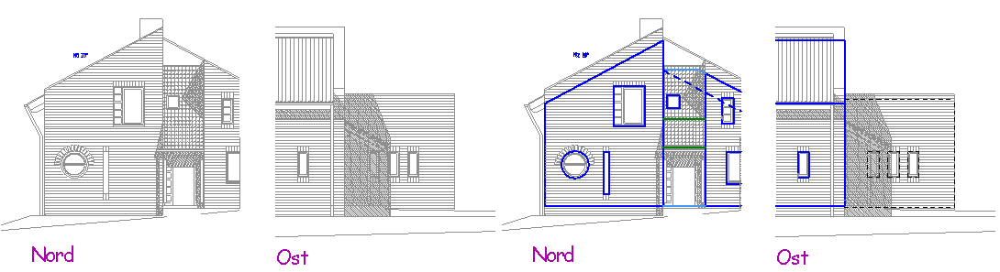
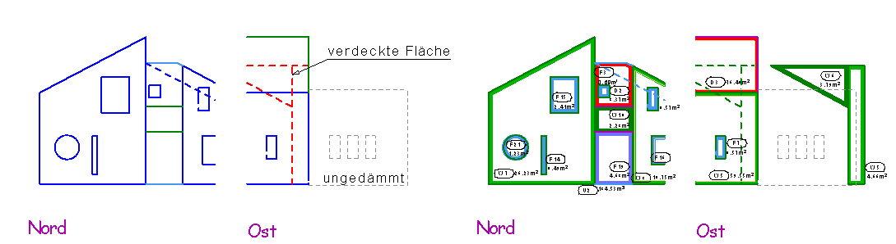

")

Da vor allem in DXF‑Dateien viele überflüssige Linien enthalten sind, ist es ratsam, die Flächen so aufzubereiten, dass das Abgreifen der Eckpunkte möglichst einfach ist. So ist es nötig, die Außenfläche bis zu der Höhe der Dachdämmung über die Traufkante hochzuziehen, um die korrekte Fläche zu erhalten. Ebenso müssen verdeckte Flächen separat herausgezogen werden, damit sie erfasst und auch der richtigen Himmelsrichtung zugeordnet werden können.
 Original enthält sehr viele Linien; Flächenkonturen wurden nachgezeichnet. |
Da die Layer der DXF/DWG‑Dateien automatisch hinter die Standardfolien (0 … 19) von ISBCAD angefügt werden, können Sie problemlos die Konturen mit Linien und Kreisen nachzeichnen, wenn die automatische Folienbelegung eingeschaltet ist. Linien und Kreise kommen in die Folie 0. Danach werden die Folien der DXF/DWG-Datei einfach gelöscht.
 DXF-Folien ausgeblendet bzw. gelöscht; Hüllflächen sind markiert. |